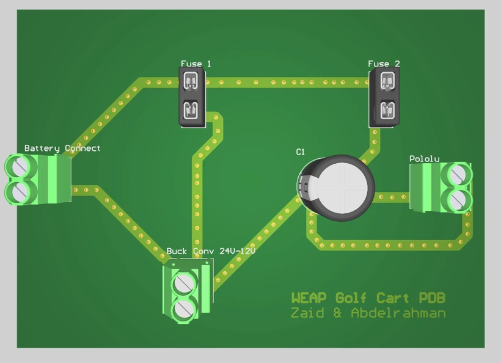

01

Autonomous Golf Cart Power Distribution Board
Takes 24 V from a traction pack and splits it between a motor drive and the compute stack of an autonomous golf cart.
- IPC-2221 trace sizing on 2 oz copper, 15 to 20 A continuous
- 24 V to 12 V to 5 V rails for a Raspberry Pi 5 and four ESP32s
- 5 A logic and 20 A motor fusing, bulk capacitance, anti spark connectors
Open project